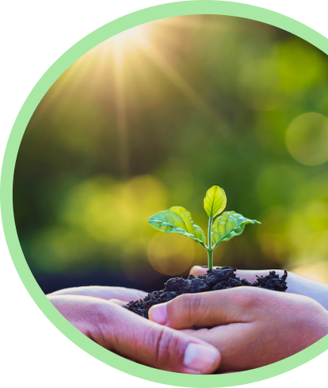
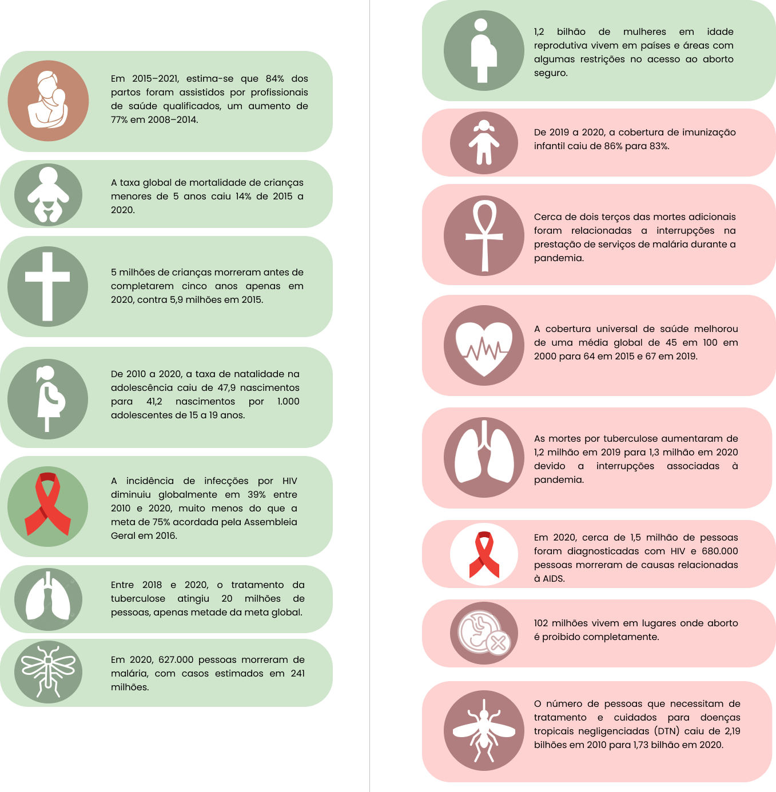

Saúde e
Bem Estar
Descubra o poder da saúde e do bem-estar para transformar sua vida em uma jornada de equilíbrio, vitalidade e felicidade plena.
CONHEÇA A ODS!

ODS (Objetivos de Desenvolvimento Sustentavel)
Os Objetivos de Desenvolvimento Sustentável (ODS) da ONU abrangem uma ampla gama de áreas, incluindo saúde e bem-estar. O ODS 3 visa garantir uma vida saudável e promover o bem-estar para todas as pessoas, abordando questões como mortalidade materna e infantil, doenças infecciosas, saúde sexual e reprodutiva, doenças não transmissíveis e saúde mental. Ao alcançar essas metas, podemos criar um futuro mais saudável e sustentável para todos.
ÚLTIMAS NOTÍCIAS


MAPA DO SITE!
Utilize o mapa para acessar instantaniamente alguma area especifica do site!
Clique na area desejada abaixo:

Objetivos e metas da ONU para 2030
Os objetivos da ODS 3 são garantir uma vida saudável e promover o bem-estar para todas as pessoas de qualquer idade, contribuindo assim para o desenvolvimento sustentável. Para isso, o ODS 3 estabelece 13 metas específicas que abrangem diferentes aspectos da saúde e do bem-estar, sendo elas:


Os programas mundiais de saúde atuam em diferentes áreas relacionadas ao ODS 3, como a prevenção e o controle de doenças, a promoção da saúde materna e infantil, a garantia do acesso a serviços de saúde de qualidade e a medicamentos essenciais, a resposta a emergências sanitárias e a defesa dos direitos humanos em saúde. Os programas mundiais de saúde também buscam fortalecer a colaboração e a coordenação entre os países e as agências internacionais para alcançar as metas do ODS 3 e da Agenda 2030.
Alguns programas globais que contribuem para a ODS 3

Estatísticas
A ODS saúde e bem-estar esta longe de ser alcançada pelo mundo. O avanço é desigual entre os países e dentro deles. A expectativa de vida varia em 31 anos entre as nações com os piores e os melhores índices. Alguns países progrediram muito, mas as médias nacionais ocultam que muitos estão ficando para trás. Para enfrentar as desigualdades e promover a saúde para todos, são necessárias abordagens que envolvam vários setores, respeitem os direitos humanos e considerem as questões de gênero. A pandemia afetou seriamente os serviços de saúde essenciais, aumentou os casos de ansiedade e depressão, diminuiu a expectativa de vida global, atrasou o combate ao HIV, à tuberculose (TB) e à malária e interrompeu vinte anos de esforços pela cobertura universal de saúde. Como consequência, a cobertura vacinal teve sua primeira queda em uma década e as mortes por tuberculose e malária cresceram. É preciso uma ação rápida e coordenada para recolocar o mundo no caminho do Objetivo 3.
Os programas de saúde no Brasil são muito importantes para garantir o direito à saúde da população, que é um dos princípios do SUS (Sistema Único de Saúde). Os programas de saúde visam prevenir e tratar doenças, promover a qualidade de vida, reduzir as desigualdades sociais e regionais em saúde, fortalecer a participação social e a gestão democrática do sistema de saúde. Os programas de saúde também contribuem para o desenvolvimento econômico e social do país, pois geram emprego e renda, estimulam a produção científica e tecnológica, e protegem o meio ambiente. Além disso, os programas de saúde são fundamentais para enfrentar os desafios sanitários que surgem no contexto global, como as pandemias, as mudanças climáticas, as migrações e os conflitos.
Estatísticas
- A razão de mortalidade materna caiu de 62 óbitos por 100.000 nascidos vivos em 2015 para 54,1 em 2019.
- A taxa de mortalidade neonatal caiu de 9,2 por mil nascidos vivos em 2015 para 7,8 em 2019.
- A taxa de mortalidade na infância caiu de 14,3 por mil nascidos vivos em 2015 para 11,4 em 2019.
- A prevalência de HIV na população entre 15 e 49 anos foi de 0,6% em 2018.
- A cobertura vacinal contra sarampo, rubéola e caxumba foi de 95% em crianças com um ano de idade em 2019.
- A proporção de partos assistidos por pessoal de saúde qualificado foi de 98,7% em 2018.
- A expectativa de vida ao nascer aumentou de 75,5 anos em 2015 para 76,6 anos em 2019.
- A proporção da população com acesso a serviços básicos de saneamento aumentou de 83% em 2015 para 88% em 2018.
Gráficos de relatório luz


Como podem ver, nos últimos anos as metas no Brasil não foram atingidas, tiveram retrocessos e são insuficientes, isso acontece pois em 2020 começou a se espalhar o vírus da Covid-19, fazendo que até mesmo avanços dos anos anteriores fossem mandados a estaca zero. A ODS 3 foi afetada pela Covid-19 no Brasil de várias formas. Segundo o relatório 2020 dos ODS, o Brasil registrou uma das maiores taxas de mortalidade por Covid-19 do mundo, com mais de 500 mil mortes até junho de 2021. Além disso, a pandemia impactou negativamente outros indicadores de saúde e bem-estar, como a cobertura vacinal, a saúde mental, a violência doméstica, a segurança alimentar e a desigualdade social. Para enfrentar esse desafio, o Brasil precisa fortalecer seu Sistema Único de Saúde (SUS), que é reconhecido como um modelo de atenção primária à saúde e de cobertura universal de saúde. O SUS tem sido essencial para garantir o acesso à prevenção, ao diagnóstico e ao tratamento da Covid-19, bem como de outras doenças, para toda a população brasileira. Além disso, o Brasil precisa investir em dados e monitoramento dos ODS, para avaliar os impactos da pandemia e planejar ações efetivas de recuperação e desenvolvimento sustentável.
É importante ter programas de saúde em São Paulo porque eles contribuem para a promoção da saúde e qualidade de vida da população, enfrentando os determinantes sociais da saúde e reduzindo as desigualdades. Alguns exemplos de programas de saúde em São Paulo são: Núcleo de Programas Estratégicos (NUPES), que coordena projetos que integram as ações de atenção básica e hospitalar; Programa Saúde da Família (PSF), que oferece atendimento domiciliar e comunitário por equipes multidisciplinares; e Programa Saúde no Esporte, que incentiva a prática de atividades físicas e esportivas para prevenir doenças crônicas e melhorar o bem-estar. Esses são apenas alguns dos programas que fazem parte da rede de saúde pública da cidade.
Alguns programas de São Paulo que contribuem para a ODS 3
Estatísticas
- A redução da taxa de mortalidade materna de 55,1 por 100 mil nascidos vivos em 2016 para 48,8 em 2019.
- A redução da taxa de mortalidade infantil de 10,9 por mil nascidos vivos em 2016 para 9,9 em 2019.
- A redução da taxa de incidência de tuberculose de 54,2 por 100 mil habitantes em 2016 para 50,4 em 2019.
- A redução da taxa de incidência de AIDS de 18,5 por 100 mil habitantes em 2016 para 14,8 em 2019.
- O aumento da proporção de partos cesáreos realizados no SUS de 32% em 2016 para 36% em 2019.
- O aumento da proporção de gestantes com pelo menos seis consultas pré-natais no SUS de 77% em 2016 para 80% em 2019.
- A taxa de incidência de dengue foi de 17,9 por 100 mil habitantes em 2021, uma redução de 86% em relação a 2020.
- A taxa de cobertura vacinal da primeira dose da vacina contra COVID-19 foi de 97,4% em 2021, a maior entre os estados brasileiros.
- A taxa de mortalidade por doenças cardiovasculares foi de 154,8 por 100 mil habitantes em 2018, uma redução de 40% em relação a 1980.
- A taxa de mortalidade por câncer foi de 116,7 por 100 mil habitantes em 2018, um aumento de 14% em relação a 1980³.
- A proporção de pessoas que buscaram informações relacionadas à saúde na internet foi de 55% em 2021, um aumento de 9 pontos percentuais em relação a 2019.